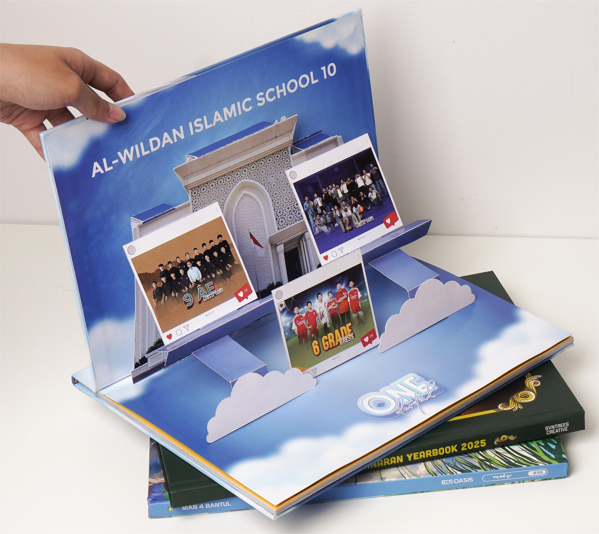

Panduan
Panduan Lengkap Cetak Buku Tahunan Sekolah di Purworejo
Panduan praktis memilih ukuran, kertas, dan finishing untuk buku tahunan sekolah di Purworejo. Termasuk estimasi biaya dan waktu pengiriman ke Purworejo Kota, Gebang, dan Banyuurip.
Baca Selengkapnya